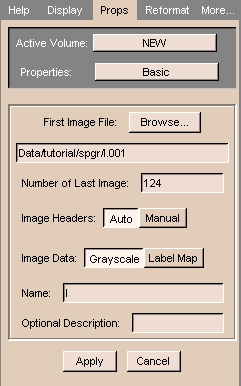

To load volumes that have headers:
- In the Data panel, click Add Volume.
The Props tab of the Volumes panel appears.

- To find the first image file, click Browse.
A dialog box appears.
- Select the first image of the volume that you would
like to load, and then click Open. (The number of the last image in the volume
will automatically appear in the Number of Last Image field.)
- Leave Image Headers on Auto.
- Using the Image Data radio buttons, select whether your
images are grayscale or label maps (the output of a segmentation).
- The Name field is the name that your volume will
have within Slicer.
- You may enter a description in the optional Description
field, such as "Presurgical_SPGR".
- When you are done making changes, click Apply to read in the volume. Your
data will now appear in the 2D portion of the Viewer window.